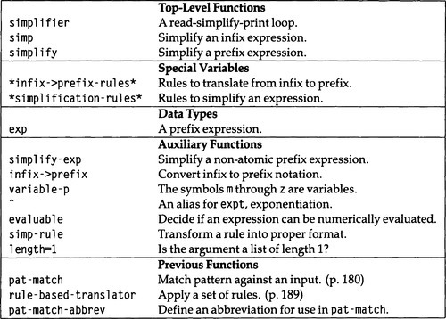

|
paip-ru
1
|
Наша жизнь испорчена деталями....
Упрощай, упрощай.
-Henry David Thoreau, Walden (1854)
"Символьная математика" относится к числовой математике так же, как алгебра к арифметике: она имеет дело с переменными и выражениями, а не только с числами. Первоначально компьютеры были разработаны в первую очередь для решения арифметических задач: для суммирования длинных числовых столбцов, для умножения многозначных чисел, для решения систем линейных уравнений и для расчета траекторий баллистики. Ободренные успехом в этих областях, люди надеялись, что компьютеры можно будет использовать и для решения более сложных задач; дифференцировать или интегрировать математическое выражение и получить другое выражение в качестве ответа, а не просто число. Несколько программ были разработаны в этом направлении в 1960-х и 1970-х годах. Они использовались в основном профессиональными математиками и физиками, имеющими доступ к большим мэйнфреймам. Недавно такие программы, как MATHLAB, DERIVE и MATHEMATICA, предоставили эти возможности среднему пользователю персонального компьютера.
Интересно взглянуть на историю символической алгебры, которая началась в 1963 году с SAINT, программы Джеймса Слэгла по символьному интегрированию. Первоначально SAINT был провозглашен триумфом AI. Он использовал общие методы решения проблем, аналогичные GPS, для поиска решений сложных проблем. Программа преодолела проблему интеграции, выбрав один из известных ей методов и выполняла откат назад, когда какой-либо подход не удавался. Поведение SAINT при решении таких задач изначально было подобно (а в конечном итоге намного лучше) результативности студентов-математиков.
Со временем ИИ-компонент символьной интеграции начал исчезать. Джоиль Мозес реализовал преемника SAINT назвав его SIN. Он использовал многие из тех же самых методов, но вместо того, чтобы полагаться на поиск, чтобы найти правильную комбинацию методов, он имел дополнительные математические знания, которые заставляли программу выбирать правильную технику на каждом шаге, без какого-либо обеспечения возвратов назад и альтернативных попыток. SIN решал больше проблем и был гораздо быстрее SAINT, хотя и не был совершенным: он все еще иногда делал неправильный выбор и мог не решить проблему, которую ему задали.
К 1970 году математик Р.Риш и другие разработали алгоритмы неопределенного интегрирования любого выражения, включающего алгебраические, логарифмические или экспоненциальные расширения рациональных функций. Другими словами, для "нормальной" функции алгоритм Риша вернет либо неопределенный интеграл функции, либо указание на то, что интеграл в замкнутой форме невозможен в терминах элементарных функций. Эта работа положила конец эпохе рассмотрения интегрирования как проблемы поиска.
SIN был дополнительно доработан, объединен с частями алгоритма Риша и включен в развивающуюся программу MACSYMA 1. По большей части усовершенствование MACSYMA состояло из включения новых алгоритмов. Лишь немногие эвристики выживают. Сегодня MACSYMA больше не считается программой ИИ. Её ежедневно используют ученые и математики, в то время как ELIZA и STUDENT теперь являются лишь историческими сносками.
С помощью ELIZA и STUDENT мы смогли разработать миниатюрные программы, которые дублировали большинство функций оригинала. Мы даже не будем пытаться разработать программу, достойную названия MACSYMA; вместо этого мы довольствуемся скромной программой для символического упрощения, которую мы будем называть (просто) simplifier. Затем мы расширим simplifier, чтобы выполнять дифференцирование и некоторые задачи интегрирования. Идея состоит в том, что при таком выражении, как (2-1)*x* + 0, мы хотим, чтобы программа вычисляла упрощенную форму x.
Согласно Математическому словарю (Джеймс и Джеймс, 1949), слово "упрощенный" - это "вероятно, самый неопределенный термин, серьезно используемый в математике". Проблема в том, что "упрощение" относится к тому, что вы хотите использовать для следующего выражения. Что проще: x 2 + 3 x + 2 или (x + 1) (x + 2)? Первое упрощает интегрирование или дифференцирование, второе - поиск корней. Мы ограничимся "очевидными" упрощениями. Например, x почти всегда предпочтительнее 1 x + 0.
Мы представим упрощения в виде списка правил, очень похожих на правила для STUDENT и ELIZA. Но поскольку каждое правило упрощения представляет собой алгебраическое уравнение, мы будем хранить каждое из них как exp, а не как rule. Чтобы сделать вещи более понятными, мы будем писать каждое выражение в инфиксной форме, но хранить их в префиксной форме, ожидаемой exp. Для этого требуется функция infix->prefix для преобразования инфиксных выражений в префиксную нотацию. У нас есть выбор, насколько общими мы хотим, чтобы наша инфиксная нотация была. Рассмотрим:
Первый инфиксный, заключенный в круглые скобки, второй использует приоритет операторов (умножение связывает сильнее, чем сложение, и поэтому выполняется первым), а третий использует неявное умножение, а также приоритет операторов. Четвертый требует наличия лексического анализатора, чтобы разбивать символы Лиспа на части.
Предположим, мы хотим обработать только случай, при котором выражение полностью заключено в круглые скобки. Чтобы написать infix->prefix, можно сначала взглянуть на prefix->infix (на стр. 228), попытавшись приспособить его к нашим новым целям. При этом внимательный читатель может обнаружить сюрприз: infix->prefix и prefix->infix на самом деле являются одной и той же функцией! Обе оставляют атомы без изменений, и обе преобразуют трехэлементные списки, меняя местами exp-op и exp-lhs. Обе применяются рекурсивно к (возможно, измененному) входному списку. Как только мы обнаружим этот факт, возникнет соблазн не писать infix->prefix, а вместо этого просто вызвать prefix->infix. Избегайте этого искушения любой ценой. Вместо этого определите infix->prefix, как показано ниже. Предназначение вашего кода будет более ясным:
(prefix->infix infix-exp))
Как мы видели выше, полностью заключенная в круглые скобки инфиксная запись может быть довольно уродливой, со всеми этими дополнительными круглыми скобками, поэтому вместо этого мы будем использовать приоритет операторов. Есть несколько способов сделать это, но самый простой способ продолжить - использовать наш ранее определенный инструмент rule-based-translator и его подинструмент pat-match. Обратите внимание, что третье предложение infix->prefix, то, которое вызывает rule-based-translator, необычно тем, что состоит из одного выражения. Большинство условных предложений имеют два выражения: тест и результат, но такие, как это, означают: "Вычислить тест и, если результат не равен nil, вернуть вычисленное значение.
В противном случае переходите к следующему предложению".
Поскольку в этой главе мы занимаемся математикой, мы принимаем математическое соглашение об использовании некоторых однобуквенных переменных и переопределим variable-p так, чтобы переменные представляли собой только символы от m до z.
Теперь мы готовы определить правила упрощения. Мы используем определение типа данных rule и exp (стр. 221) и prefix->infix (page 228) из STUDENT. Они повторяются здесь:
Мы также снова используем rule-based-translator (page 188), на этот раз со списком правил упрощения. Разумный список правил упрощения показан ниже. Этот список охватывает четыре арифметических оператора: сложение, вычитание, умножение и деление, а также возведение в степень(exp), обозначаемый символом "^"
Опять же, важно отметить, что правила упорядочены, и что более поздние правила будут применяться только тогда, когда более ранние правила не совпадают. Так, например, 0/0 упрощается до undefined, а не до 1 или 0, потому что правило для 0 / 0 предшествует другим правилам. См. Упражнение 8.8 для более полной обработки этого.
Теперь мы готовы приступить к написанию упростителя. Основная функция, simpleifier, будет многократно печатать приглашение-подсказку, читать ввод и печатать его в упрощенной форме. Ввод и вывод находятся в инфиксном виде, а вычисления - в префиксном, поэтому нам нужно их соответственно преобразовать; функция simp делает это, а функция simpleify заботится о единственном префиксном выражении. Это кратко показано на рис. 8.1.
| []() |
|---|

|
| Figure 8.1: Словарь для Simplifier |
(ed: this should be a markdown table)
Вот программа:
Функция simpleify гарантирует, что любое составное выражение будет упрощено, если сначала упростить аргументы, а затем вызвать simpleify-exp. Эта последняя функция выполняет поиск по правилам упрощения, подобно use-eliza-rules и translate-to-expression. Когда она находит совпадение, simpleify-exp заменяет правильные значения переменных и вызывает simplify для результата, simplify-exp также имеет возможность вызвать eval, чтобы упростить арифметическое выражение до числа. Как и в STUDENT, именно ради этого eval мы и требуем, чтобы выражения были представлены в виде списков в префиксной нотации. Числовое вычисление выполняется после проверки правил, чтобы правила могли перехватывать выражения вроде (/ 1 0) и упрощать их до ʻundefined`. Если бы мы сначала выполнили числовое вычисление, эти выражения выдали бы ошибку при передаче в eval. Поскольку Common Lisp поддерживает рациональные числа (дроби) произвольной точности, мы гарантируем, что не будет ошибки округления, если только входные данные явно не включают неточные (с плавающей запятой) числа. Обратите внимание, что мы разрешаем вычисления с участием четырех арифметических операторов, но возведение в степень разрешено только в том случае, если показатель степени является целым числом. Это потому, что выражения типа (^ 4 1/2) не гарантируют возврата 2 (точный квадратный корень из 4); ответ может быть 2.0 (неточное число). Другая проблема заключается в том, что - 2 также является квадратным корнем из 4, и в некоторых случаях это правильный вариант.
На следующей трассировке показаны некоторые примеры работы упрощателя. Сначала мы покажем, что его можно использовать как калькулятор; затем мы показываем более сложные задачи.
Здесь мы завершили цикл нажатием клавиши прерывания на терминале. (Детали этого механизма варьируются от одной реализации Common Lisp к другой). Simplifier, похоже, работает довольно хорошо, хотя в последнем примере он ошибся: (3 * (2 * X)), а должно упроститься до (6 * X). В следующем разделе мы исправим эту проблему.
Мы могли бы легко добавить правило, чтобы переписать (3 * (2 * X)) как ((3 * 2) * X) и затем (6 * X). Проблема в том, что это правило также перепишет (X * (2 * 3)) как ((X * 2) * 3), если только у нас не будет способа ограничить применение правила только тогда, когда оно будет группировать числа вместе. К счастью, pat-match действительно предоставляет именно такую возможность, использованием образца ?is. Мы могли бы написать это правило:
Оно преобразует (3 * (2 * x)) в ((3 * 2) * x) и следовательно, в (6 * x). К сожалению, проблема не так проста. Мы также хотим упростить ((2 * x) * (y * 3)) до (6 * (x * y)). Мы можем сделать улучшить работу по группировке чисел вместе, приняв три соглашения. Во-первых, первыми ставить числа в продукциях: измените x * 3 на 3 * x. Во-вторых, совмещать числа во внешнем выражении с числом во внутреннем выражении: измените 3 *(5 * x) на (3 * 5)* x. В-третьих, по возможности уберать числа из внутренних выражений: измените (3 * x) *y на 3 * (x * y). Мы принимаем аналогичные соглашения для сложения, за исключением того, что мы предпочитаем ставить числа последними: x + 1 вместо 1 + x.
С новыми правилами мы готовы попробовать еще раз. На некоторые вопросы мы получаем только правильные ответы:
К сожалению, есть и другие проблемы, которые не упрощаются должным образом:
Мы вернемся к этим проблемам в разделе 8.5.
Exercise 8.1 Убедитесь, что набор правил, только что введенный, действительно реализует желаемые соглашения, и что соглашения имеют надлежащий эффект и всегда заканчиваются. В качестве примера потенциальной проблемы, что произойдет, если мы используем правило (x * n = n * x) вместо правила (s * n = n * s)?
В предыдущем разделе мы ограничились простыми арифметическими функциями, чтобы не пугать тех, кто немного недоверчив к сложной математике. В этом разделе мы немного добавим к математической сложности, не изменяя саму программу ни на йоту. Таким образом, математически застенчивые могут спокойно перейти к следующему разделу, не чувствуя, что они упускают что-то интересное.
Мы начнем с представления некоторых элементарных свойств логарифмических и тригонометрических функций. Новые правила аналогичны правилам "нулей и единиц", которые нам нужны для арифметических операторов, за исключением того, что здесь важны константы e и pi (e = 2.71828... и π = 3.14159...), в дополнение к 0 и 1. Мы также вводим некоторые правила, относящиеся к логарифмам и экспонентам, а также к суммам и разностям логорифмов. Правила предполагают, что комплексные числа не допускаются. Если бы это было так, log ex (и даже xy) имел бы несколько значений, и было бы неправильно произвольно выбирать одно из этих значений.
Теперь мы хотели бы пойти еще дальше и расширить систему, чтобы справиться с дифференцированием. Это любимая проблема, и она имеет историческое значение: летом 1958 года Джон Маккарти решил исследовать дифференцирование как интересную проблему символических вычислений, которую было трудно выразить на примитивных языках программирования того времени. Это исследование привело его к пониманию важности функциональных аргументов и рекурсивных функций в области символьных вычислений. Например, Маккарти изобрел то, что мы теперь называем mapcar, чтобы выразить идею о том, что производная суммы является суммой производной функции, примененной к каждому аргументу. Дальнейшая работа привела Маккарти к публикации в октябре 1958 года Записки MIT AI Lab No. 1: "Алгебраический язык для манипулирования символическими выражениями", который определил предшественника Lisp.
В работе Маккарти и во многих последующих текстах вы можете увидеть программы символического дифференцирования с процедурой упрощения, выполняемой в конце, чтобы сделать вывод более читаемым. Здесь мы используем противоположный подход: процедура упрощения является центральной, а дифференцирование рассматривается как просто еще один оператор со своим собственным набором правил упрощения. Нам потребуется новое правило преобразования infix-to-prefix(инфикса в префикс). В то же время мы добавим правило для неопределенного интегрирования, хотя мы еще не будем писать правил упрощения для интегрирования. Вот новые обозначения:
| []() | ||
|---|---|---|
| math | infix | prefix |
| dy/*dx* | d y / d x | (d y x) |
| ∫ ydx | Int y d x | (int y x) |
А вот и необходимые правила перехода infix-to-prefix(от инфикса к префиксу):
Поскольку новое правило для дифференцирования стоит раньше правила для деления, не будет никакой путаницы с дифференциалом, интерпретируемым как частное. С другой стороны, существует потенциальная проблема с интегралами, которые содержат d в качестве переменной. Пользователь всегда может избежать этой проблемы, используя (d) вместо d внутри интеграла.
Теперь мы дополняем правила упрощения, копируя таблицу дифференцирования из справочника:
Мы добавили правило по умолчанию (d u / d x = 0); оно должно применяться только тогда, когда выражение u свободно от переменной x (то есть когда u не является функцией x). Мы могли бы использовать ?if, чтобы проверить это, но вместо этого мы полагаемся на то, что дифференцирование ограничено списком операторов, описанных здесь - так что, до тех пор, пока мы не введем никаких новых операторов, ответ всегда будет правильным. Обратите внимание, что есть два правила для возведения в степень, одно для случая, когда показатель степени является числом, и одно, когда это не так. В этом не было строгой необходимости, поскольку второе правило охватывает оба случая, но именно так правила были записаны в таблице дифференциалов, с которой я консультировался, поэтому я оставил оба правила.
Программа хорошо справляется с проблемами дифференцирования и, по-видимому, умна в использовании тождества sin^2*x* + cos^2*x* = 1.
В этом разделе мы вернемся к некоторым примерам, которые создают проблемы для упрощателя. Вот простой пример
SIMPLIFIER > (x + y + y + x)=> (X + (Y + (Y + X)))
Мы бы предпочли 2 * (x + y). Проблема в том, что, хотя мы приложили много усилий, чтобы сгруппировать числа вместе, не было никаких усилий, чтобы сгруппировать не-числа. Мы могли бы написать правила вида:
Они будут работать для рассматриваемого примера, но они не будут работать для `(x + y + z + y + x)'. Для этого нам понадобится больше правил:
Чтобы справиться со всеми случаями, нам понадобится бесконечное число правил. Язык сопоставления с образцом недостаточно силен, чтобы выразить это кратко. Могло бы помочь, если бы вложенные суммы (и произведения) были невложенными; то есть, если бы мы позволили + принять произвольное число аргументов вместо только одного. Как только аргументы сгруппированы вместе, мы можем отсортировать их так, чтобы, скажем, все ys появлялись перед z и после x. Тогда подобные термины можно было бы сгруппировать вместе. Но мы должны быть осторожны. Рассмотрим следующие примеры:
Мы бы хотели, чтобы (3 * x) сортировался в то же место, что и x и (4 * x), чтобы все они могли быть объединены в (8 * x). В главе 15 мы разрабатываем новую версию программы, которая решает эту проблему.
До сих пор алгебраические манипуляции были простыми. Существует прямой алгоритм вычисления производной каждого выражения. Когда мы рассматриваем интегралы или первообразные 2, картина намного сложнее. Как вы, возможно, помните из исчисления для первокурсников, вычисление интегралов - это настоящее искусство. В этом разделе мы пытаемся увидеть, как далеко мы можем зайти, кодируя лишь некоторые из множества приемов, доступных изучающему математику.
Первый шаг - признать, что записей в таблице упрощения будет недостаточно. Вместо этого нам понадобится алгоритм для вычисления или "упрощения" интегралов. Мы добавим новый случай в simpleify-exp, чтобы проверить каждый оператор, чтобы увидеть, связана ли с ним функция упрощения. Эти функции упрощения будут связаны с операторами через функции set-simp-fn и simp-fn. Если у оператора есть функция упрощения, то эта функция будет вызываться вместо обращения к правилам упрощения. Функция упрощения может решить не обрабатывать выражение в конце концов, возвращая nil, и в этом случае мы продолжим использовать другие методы упрощения.
На уроках математического анализа первокурсникам преподаются различные методы интегрирования. К счастью, одина техника - метод разделения переменных - может быть использован для решения большинства проблем, которые возникают на уровне математики первокурсников, возможно, 90% задач, заданных при проверке. Основное правило:
∫fxdx=∫fududxdx.
В качестве примера рассмотрим ∫ x sin(<em>x*2) *dx. Используя подстановку u = x*2, мы можем дифференцировать, чтобы получить *du/*dx* = 2*x*. Затем, применяя основное правило, мы получаем:
∫xsinx2dx=12∫sinududxdx=12∫sinudu.
Предположим, что у нас есть таблица интегралов, включающая правило ∫ sin(x) dx = - cos(x). Тогда мы сможем получить окончательный ответ:
-12cosx2.
Если абстрагироваться от этого примера, общий алгоритм интегрирования выражения y относительно x следующий:
Этот алгоритм недетерминирован, так как может быть много факторов y. В нашем примере f(u) = sin(<em>x*2), *u = x*2, and *du/*dx* = 2*x*. Итак, k=12 !!!(span) {:.hiddenClass}
, и ответ будет -12cosx2 !!!(span) {:.hiddenClass}
.
Первый шаг в реализации этой техники - убедиться, что разделение выполнено правильно. Нам нужно иметь возможность выбирать множители y, разделять выражения, а затем определять, свободны ли частные(коэффициэнты) от x. Это делает функция factorize. Она хранит список факторов и текущее произведение постоянных факторов и дополняет их с каждым вызовом локальной функции fac.
factorize отображает выражение в список факторов, но нам также нужно unfactorize, чтобы превратить список обратно в выражение:
Метод разделения на производные(метод разделения переменных) требует разделения двух выражений. Мы делаем это путем факторизации каждого выражения, а затем отмены деления на коэффициенты(факторы). Могут быть случаи, когда, например, два множителя в числителе можно перемножить, чтобы отменить множитель в знаменателе, но такая возможность не рассматривается. Оказывается, что большинство задач по математике первокурсников не требуют такой сложности.
Наконец, предикат free-of возвращает истину, если в выражении нет вхождений определенной переменной.
В factorize мы использовали вспомогательную функцию length=1. Вызов функции (length=l x) быстрее, чем (= (length x) 1), потому что последняя должна вычислять длину всего списока, в то время как первая просто должна смотреть, есть ли в списке элемент rest или нет.
Учитывая эти предварительные сведения, функция integrate довольно проста. Начнем с нескольких простых случаев интегрирования сумм и постоянных выражений. Затем мы факторизируем выражение и разбиваем список факторов на два: список постоянных факторов и список факторов, содержащий x. (Это делается с помощью partition-if, комбинации remove-if и remove-if-not.) Наконец, мы вызываем deriv-divides, давая ему шанс с каждым из факторов. Если ни один из них не сработает, мы возвращаем выражение, указывающее, что интеграл неизвестен.
Обратите внимание, в integrate отмечено место, где можно было бы добавить другие методы. Мы будем реализовывать только метод разделения переменных(derivative-divides). Оказывается, эта функция немного сложнее, чем простой четырехэтапный алгоритм, описанный ранее:
Есть три случая. В любом случае, все множители имеют вид (^ u n), поэтому мы разделяем множитель на основание u и показатель степени n. Если u или un равномерно делит исходное выражение (здесь представлено как множители), то у нас есть ответ. Но нам нужно проверить экспоненту, потому что ∫ undu равен u**n+1/(n + 1) для n≠ - 1, но это log(u) для n = - 1. Но следует рассмотреть третий случай. Фактор может быть чем-то вроде (^ (sin (^ x 2)) 1), и в этом случае мы должны учитывать f(u) = sin(*x*2). Этот случай обрабатывается с помощью таблицы интегрирования. Нам не нужна таблица производных, потому что мы можем просто использовать для этого simplifier.
Последний шаг - установить integrate как функцию упрощения для оператора Int. Очевидный способ сделать это:
К сожалению, это не совсем так. Проблема в том, что integrate ожидает два аргумента, соответствующих двум аргументам *y* и *x* в (Int y x). Но соглашение для функций упрощения заключается в передаче им одного аргумента, состоящего из всего выражения(Int y x). Мы могли бы вернуться и отредактироватьsimpleify-exp`, чтобы изменить соглашение, но вместо этого я предпочёл сделать преобразование следующим образом:
Вот несколько примеров, взятых из глав 8 и 9 из Calculus (Loomis 1974):
Все ответы верны, хотя последний можно было бы сделать проще. Один из быстрых способов упростить такое выражение - это разложить на множители(факторизовать) и дефакторизовать, а затем снова упростить:
С этим изменением мы получаем:
A brief history is given in the introduction to this chapter. An interesting point is that the history of Lisp and of symbolic algebraic manipulation are deeply intertwined. It is not too gross an exaggeration to say that Lisp was invented by John McCarthy to express the symbolic differentiation algorithm. And the development of the first high-quality Lisp system, MacLisp, was driven largely by the needs of MACSYMA, one of the first large Lisp systems. See McCarthy 1958 for early Lisp history and the differentiation algorithm, and Martin and Fateman 1971 and Moses (1975) for more details on MACSYMA. A comprehensive book on computer algebra systems is Davenport 1988. It covers the MACSYMA and REDUCE systems as well as the algorithms behind those systems.
Because symbolic differentiation is historically important, it is presented in a number of text books, from the original Lisp 1.5 Primer (Weissman 1967) and Allen's influential Anatomy of Lisp (1978) to recent texts like Brooks 1985, Hennessey 1989, and Tanimoto 1990. Many of these books use rules or data-driven programming, but each treats differentiation as the main task, with simplification as a separate problem. None of them use the approach taken here, where differentiation is just another kind of simplification.
The symbolic integration programs SAINT and SIN are covered in Slagle 1963 and Moses 1967, respectively. The mathematical solution to the problem of integration in closed term is addressed in Risch 1969, but be warned; this paper is not for the mathematically naive, and it has no hints on programming the algorithm. A better reference is Davenport et al. 1988.
In this book, techniques for improving the efficiency of algebraic manipulation are covered in sections 9.6 and 10.4. Chapter 15 presents a reimplementation that does not use pattern-matching, and is closer to the techniques used in MACSYMA.
Exercise 8.2 [s] Some notations use the operator ** instead of ^ to indicate exponentiation. Fix infix->prefix so that either notation is allowed.
Exercise 8.3 [m] Can the system as is deal with imaginary numbers? What are some of the difficulties?
Exercise 8.4 [h] There are some simple expressions involving sums that are not handled by the integrate function. The function can integrate a*x *x*2 + *b*x *x + c but not 5 x (a*x *x*2 + *b*x *x + c). Similarly, it can integrate x*4 + 2 x *x*3 + *x*2 but not (*x*2 + *x)2, and it can do x*3 + *x*2 + *x + 1 but not (x*2 + 1) x (*x + 1). Modify integrate so that it expands out products (or small exponents) of sums. You will probably want to try the usual techniques first, and do the expansion only when that fails.
Exercise 8.5 [d] Another very general integration technique is called integration by parts. It is based on the rule:
∫udv=uv-∫vdu
So, for example, given
∫xcosxdx
we can take u = x, dv = cos xdx. Then we can determine v = sin x by integration, and come up with the solution:
∫xcosxdx=xsinx-∫sinxx1dx=xsinx+cosx
It is easy to program an integration by parts routine. The hard part is to program the control component. Integration by parts involves a recursive call to integrate, and of all the possible ways of breaking up the original expression into a u and a dv, few, if any, will lead to a successful integration. One simple control rule is to allow integration by parts only at the top level, not at the recursive level. Implement this approach.
Exercise 8.6 [d] A more complicated approach is to try to decide which ways of breaking up the original expression are promising and which are not. Derive some heuristics for making this division, and reimplement integrate to include a search component, using the search tools of chapter 6.
Look in a calculus textbook to see how ∫ sin2*xdx* is evaluated by two integrations by parts and a division. Implement this technique as well.
Exercise 8.7 [m] Write simplification rules for predicate calculus expressions. For example,
Exercise 8.8 [m] The simplification rule (x / 0 = undefined) is necessary to avoid problems with division by zero, but the treatment of undefined is inadequate. For example, the expression ((0 / 0) - (0 / 0)) will simplify to zero, when it should simplify to undefined. Add rules to propagate undefined values and prevent them from being simplified away.
Exercise 8.9 [d] Extend the method used to handle undefined to handle + infinity and -infinity as well.
1MACSYMA is the Project MAC SYMbolic MAthematics program. Project MAC is the MIT research organization that was the precursor of MIT's Laboratory for Computer Science. MAC stood either for Machine-Aided Cognition or Multiple-Access Computer, according to one of their annual reports. The cynical have claimed that MAC really stood for Man Against Computer. !!!(p) {:.ftnote1}
2 The term antiderivative is more correct, because of branch point problems. !!!(p) {:.ftnote1}
Part III Tools and Techniques !!!(p) {:.parttitle}
1.8.13